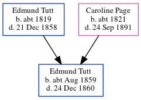

Edmund Thomas Tutt cAug 1859 - 1860
[ Home ] | [ Calendar ] | [ Surnames Index ] | [ Errors ] | [ Family History ]The child of Edmund Tutt (a sawyer) and Caroline Page (a laundress), Edmund Tutt, the great-great-uncle of Nigel Horne, was born in Dover, Kent, England c. Aug 18591,2 and baptised in Buckland, Kent, England on 26 Feb 1860.
He died on 24 Dec 1860 on George Street in Buckland3,4 (hydrocephalus (water on the brain)) and was buried at St Andrew's Church, Buckland on 30 Dec 18605,6.
Parents
- Edmund was born c. 1819
- Caroline Bromley was born c. 1821
Citations
- England & Wales births 1837-2006 - Findmypast
- England & Wales, FreeBMD Birth Index, 1837-1915 Online publication - Provo, UT, USA: The Generations Network, Inc., 2006.Original data - General Register Office. England and Wales Civil Registration Indexes. London, England: General Register Office. © Crown copyright. Published by permission of the Cont
- England & Wales deaths 1837-2007 - Findmypast
- England & Wales, FreeBMD Death Index: 1837-1915 Online publication - Provo, UT, USA: The Generations Network, Inc., 2006.Original data - General Register Office. England and Wales Civil Registration Indexes. London, England: General Register Office. © Crown copyright. Published by permission of the Cont
- Kent, Canterbury Archdeaconry Burials - Findmypast
- England Deaths & Burials 1538-1991 - Findmypast
Media
Kent, Canterbury Archdeaconry burials - GBPRS/CANT/D/95310656
England & Wales births 1837-2006 - BMD/B/1859/3/PZ/000851/006
Kent Baptisms - GBPRS/CANT/B/96232545
England Births & Baptisms 1538-1975 - R_885824714
England Deaths & Burials 1538-1991 - R_276236715
England & Wales deaths 1837-2007 - BMD/D/1860/4/NZ/000750/024
Family Tree
Map
Generated by ged2site. Last updated on Jul 3, 2024